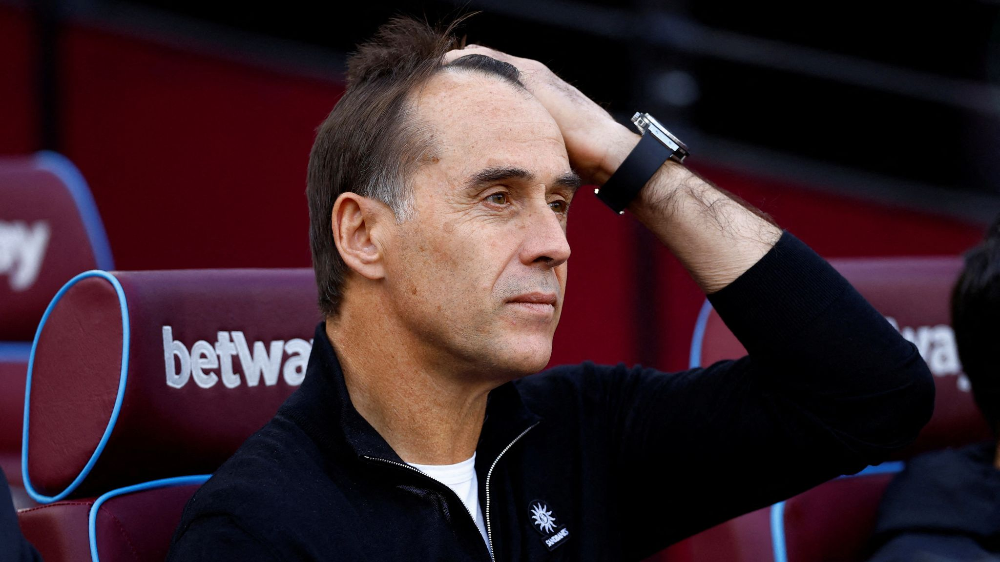

Graham Potter set for Premier League return with West Ham

West Ham have cancelled Wednesday’s scheduled press conference featuring manager Julen Lopetegui, with widespread reports saying the Premier League club are preparing sack the Spaniard.
Former Brighton and Chelsea boss Graham Potter is understood to be close to agreeing a deal to take over as the new boss at the London Stadium.
Potter has not coached any team since he was sacked at Stamford Bridge back in 2023.
Lopetegui took training as usual on Tuesday but his spell in charge looks likely to come to an end less than eight months after he was appointed to replace David Moyes.
The Hammers have won a race with Everton to secure the services of the high-rated manager, who also has experience coaching Swansea in the Premier League.
There have been positive talks between Potter and West Ham, with optimism on both sides that a deal will be struck imminently. Some minor details are to be ironed out, yet Sky Sports believes that it is possible that he could be in charge by the time the Hammers face Aston Villa in the FA Cup on Friday.
Tweet from Fabrizio Romano looks to confirm that a deal is on the way for Graham Potter's potential move to the Hammers is on the way and a matter of days.
🚨 West Ham and Graham Potter’s camp are discussing details of the contract in order to proceed with the agreement.
— Fabrizio Romano (@FabrizioRomano) January 8, 2025
All parties optimistic after spending last two days in talks, still waiting on final key points to get it sealed. pic.twitter.com/Q7kzt1HaA5
Everton are not currently fighting the situation, with the Toffees having earmarked the ex-Chelsea boss as a potential replacement for Sean Dyche should the Goodison Park side have chosen to sell him.
BREAKING: West Ham have held further positive talks with Graham Potter about the possibility of succeeding Julen Lopetegui as head coach 🚨 pic.twitter.com/xgN9kQgl6S
— Sky Sports News (@SkySportsNews) January 7, 2025
TRENDING
VIDEO

Shirley and Odafe were just family friends until their relationship took
Shirley and Odafe were just family friends until their relationship took
Shirley and Odafe were just family friends until their relationship took
Shirley and Odafe were just family friends until their relationship took
Shirley and Odafe were just family friends until their relationship took